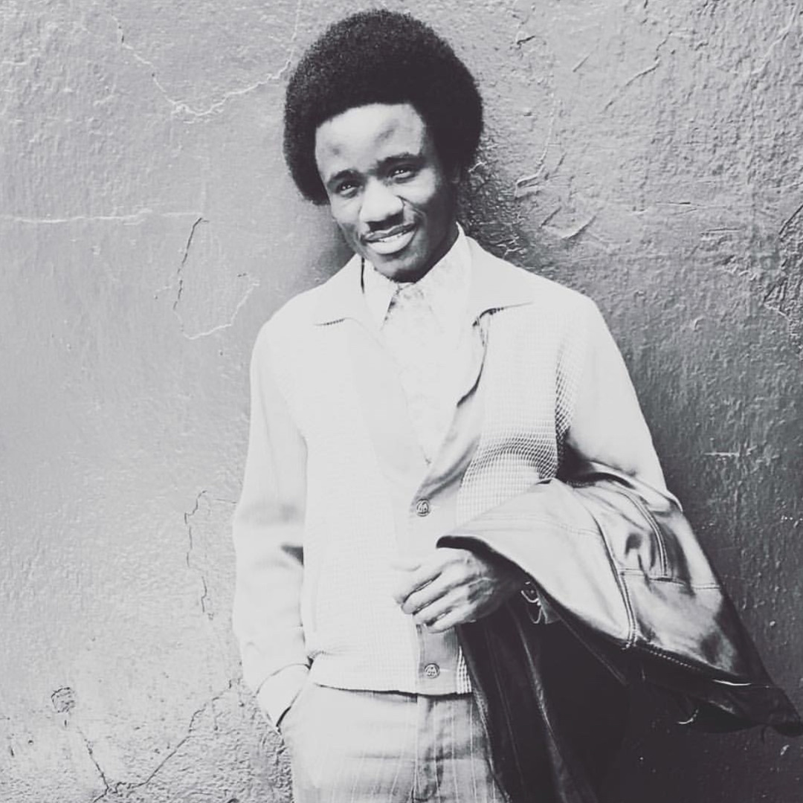

Independent artist • Performer • Creator
WAKANDABOY100 turns music, movement, and personality into moments people replay.
A high-energy artist portfolio built around official music videos, live performance, dance visuals, and short-form creator content — led by “My Baby” with 300K+ YouTube views.
- 316K+
- views on “My Baby”
- 95+
- YouTube uploads
- 87
- Short-form videos

Featured proof300K+ YouTube views
Featured release
“My Baby” is the front door.
The official music video is the strongest public proof point today: independent release energy, performance, dance, and audience traction in one embed.
Selected works
Music videos, live performance, and movement-led visuals.
Short-form creator lane
Comedy, dance, fitness, public reactions, and personality content.
WAKANDABOY100 also builds audience through fast, social-native videos — a mix of humor, movement, confidence, and everyday performance moments.
Listen everywhere
Follow, stream, and save the catalog.
SoundCloud profile image used as the current approved-style visual — easy to swap when new photos arrive.
About
Built independent. Presented professionally.
WAKANDABOY100 is an independent artist, performer, dancer, music-video creator, and short-form content creator. His public catalog moves between official music videos, live performance, choreographed visuals, and quick-hit social content built for replay value.
The site keeps the focus on what is already public and proven: the music videos, the streaming links, the social handles, and the 300K+ view flagship video that gives new viewers an immediate reason to press play.
Booking / Private events
Bring WAKANDABOY100 to birthdays, parties, and special performances.
For event planners and hosts, the booking package can include a 30-minute comedy set, a 3-song live performance from released music, and optional dancer support. Pricing is handled privately after the event details are reviewed.
30-minute comedy set plus three released songs selected for the room, event, and audience.
Built for high-energy rooms where personality, crowd work, music, and movement matter.
Send date, city, venue, expected audience size, budget range, and whether dancers are requested.
Fastest path: DM with the event date, city, venue, audience size, budget range, and whether dancers are requested. Online calendar booking can be connected after the event link is approved.